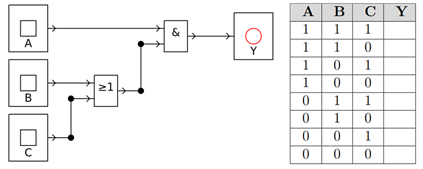

Im Folgenden findest du Übungsaufgaben zu Schaltnetzen. Du brauchst dafür alle Werkzeuge aus Kapitel 3: Gatter, Analyse, Synthese, KV-Diagramme und Addierer. Das Vorgehen ist immer gleich: Problem → Wahrheitstabelle → Funktion → vereinfachen → Schaltung → testen.
Grundaufgaben
Aufgabe 3.8.1: Alarmanlage mit Hauptschalter AFB II
Betrachte die folgende Schaltung.

Fülle die dazugehörige Wahrheitstabelle aus. Bei welcher Belegung entsteht welches Ergebnis?
Überlege dir einen Anwendungsfall aus der realen Welt, der mit einer solchen Schaltung abgedeckt werden könnte.
Angenommen, diese Schaltung würde eine Alarmanlage mit einem Hauptschalter (A) und zwei Sensoren (B und C) abbilden. Wenn der Hauptschalter gedrückt ist und einer der Sensoren aktiviert wird, schlägt die Anlage Alarm. Füge in LogicSim einen dritten Sensor D hinzu, der gleichberechtigt zu den Sensoren B und C anschlagen kann. Beschreibe, wie sich die Tabelle mit den Wahrheitswerten verändert.
Aufgabe 3.8.2: Raketenstart AFB II
Zum Start einer Rakete benötigt ein Raketenkontrollsystem eine Starterlaubnis. Wenn die Starterlaubnis erteilt ist, kann einer von zwei Startknöpfen gedrückt werden, um die Rakete zu starten.
Erstelle in LogicSim eine Schaltung mit zwei Logikgattern, die diesen Sachverhalt abbildet. Das Abheben der Rakete soll durch das Leuchten einer Lampe symbolisiert werden.
Füge der Schaltung einen „Präsidentenknopf“ hinzu. Dieser kann sämtliche Regeln überschreiben und die Rakete auch ohne Starterlaubnis starten lassen.
Zur Wartung der Rakete ist ein Testmodus nötig. Wird der Schalter für den Testmodus betätigt, werden sämtliche Eingaben ignoriert (auch der Präsidentenknopf), und die Rakete kann unter keinen Umständen starten.